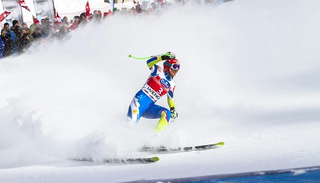

<!-- Section 1 -->
<div class="detail-content">
  <section class="detail-item">
    
    <div class="event-detail-header">
      <h3 class="a-detail-name">Ski Race Extreme</h3>
      <div class="tag a-detail-tag">Skiing</div>
    </div>
    <div class="event-detail-dates">
      <p>Saturday, April 12th, 2055</p>
      <p>Race Starts at 11:00 AM</p>
    </div>
    <p>
      Join us for an adrenaline-packed day as top athletes race down the
      challenging slopes of Whistler Blackcomb in this high-stakes, fast-paced
      competition! Whether you’re cheering from the sidelines or racing for the
      finish line, the Ski Race Extravaganza promises heart-stopping moments and
      intense action.
    </p>
    <p>
      Race Details:Athletes will tackle a challenging alpine course that pushes
      their skills to the limit. Expect high-speed turns, sharp gates, and
      exhilarating jumps – this event is a true test of precision and control.
      Watch world-class skiers battle it out for the top spot as they navigate
      Whistler’s iconic terrain!
    </p>
    <p>
      Spectator Info:The best views of the race can be found at the Race Viewing
      Deck, just a short walk from the village. Grab a hot drink, feel the
      excitement in the air, and cheer on the competitors as they rocket down
      the mountain.
    </p>
    <p>
      Don’t miss your chance to experience the thrill of alpine racing in one of
      the most stunning ski resorts in the world. Whether you’re racing,
      spectating, or simply soaking in the mountain atmosphere, the Ski Race
      Extravaganza is a must-see event at the Whistler Ski & Snowboard Festival!
    </p>
    <a class="custom-button" href="#">Register</a>

    <div class="credits">
      <p>Event details created from ChatGPT</p>
    </div>
  </section>
</div>
